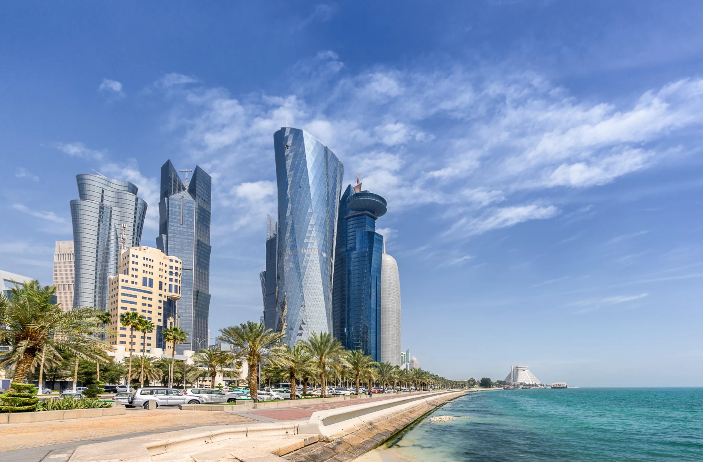

In This Guide

Quick Answer
Sources reviewed: 30 August 2026. Embassy, consular-jurisdiction, fee, processing-time, translation and Qatar MOFA requirements can change. Confirm current instructions before submission.
Qatar’s official materials commonly call this process “attestation,” while China-side consular materials often use “legalization.” Both terms refer here to the official authentication chain used to prepare a Chinese document for Qatar.
Does the Apostille Convention Apply Between China and Qatar?
China is a Contracting Party to the Hague Apostille Convention, but Qatar is not listed as a Contracting Party in the current HCCH Apostille status table. The Convention therefore does not create a China–Qatar Apostille route.
A China Apostille does not replace the applicable Qatar consular-legalization chain under the Apostille Convention because Qatar is not a Contracting Party. When a Qatar recipient requires authentication, confirm the consular route before obtaining an Apostille intended for a different destination.
For a broader explanation of the non-Hague route, see our guide to China embassy and consular legalization services.
Apostille
The Convention route applies only where its framework governs the intended international use. A China Apostille should not be assumed to replace Qatar consular legalization.
Consular Legalization for Qatar
Confirm the accepted source or certified form, China MFA or authorized FAO, competent Qatar mission and any Qatar-side attestation required by the recipient.
The Standard China-to-Qatar Legalization Route
- Document Preparation
Confirm the form, translation and any required notarial or competent-authority certification.
- China MFA / Authorized FAO
Confirm the appropriate China-side intake and requirements.
- Qatar Embassy / Consulate
Confirm the competent mission and current document-specific intake requirements.
- Qatar MOFA Attestation, If Required
Confirm whether the intended filing requires this separate step.
- Final Submission
Submit the appropriately prepared documents to the receiving organization.
The exact legalization route depends on the document type, issuing authority, consular jurisdiction and receiving organization's requirements.
This is a planning framework, not a universal mandatory chain for every document or recipient. The correct starting form and later Qatar-side steps depend on the document category, issuing location, intended use and receiving organization.
1. Prepare the Correct Document Form
The form entering the route might be an accepted foreign-related notarial certificate, a document certified by its competent issuing authority, a court-certified judicial document, a commercially certified record or a notarized copy or signature.
The underlying record and the certificate being legalized are not always the same document. A domestic civil record may support a foreign-related notarial certificate, while a commercial invoice may require a commercial certification route. Our overview of document legalization and authentication explains the general distinction.
2. China MFA or Authorized Local Foreign Affairs Office
China MFA’s current legalization guidance explains the China-side legalization framework for documents intended for non-Apostille destinations. Depending on the document, an acceptable foreign-related notarial certificate or another qualifying certified form may need to be prepared before legalization by the Ministry of Foreign Affairs or an authorized local Foreign Affairs Office.
The intake point depends on the document, issuing location and local authority arrangements. Direct submission of an original should not be assumed merely because the record was issued by a public body.
3. Qatar Embassy or Consulate in China
After China-side legalization, the document normally proceeds to the competent Qatar diplomatic mission when Qatar consular legalization is required. The responsible mission is determined by consular jurisdiction, and category-specific instructions apply to academic and commercial documents.
The general embassy legalization process provides additional background on the destination mission’s role.
4. Possible Qatar MOFA Attestation
A Qatar-side MOFA attestation may be required for the eventual filing, particularly where the receiving organization requests a Qatar MOFA-attested foreign document. This review is separate from legalization by the Qatar mission in China and should not be described as universally mandatory.
Which Qatar Embassy or Consulate Has Jurisdiction?
China MFA’s current Qatar requirements, reviewed on 30 August 2026, allocate documents from the following locations:
- Guangdong, Fujian, Guangxi and Hainan: Qatar Consulate General in Guangzhou.
- Shanghai, Jiangsu, Zhejiang and Anhui: Qatar Consulate General in Shanghai.
- Other locations: Follow the applicable Qatar mission jurisdiction, including Beijing where appropriate.
Do not send every case automatically to the Embassy of Qatar in Beijing. Consular boundaries and submission procedures can change, so jurisdiction should be reconfirmed before filing.
Personal Documents for Qatar
Personal records may include birth, marriage, divorce, police and death-related documents. They often proceed through an accepted foreign-related notarial or certified form, followed by China MFA or authorized FAO legalization and Qatar mission legalization where required.
The source record and preparation still differ. Administrative and judicial divorce records are not interchangeable; police certificates may be subject to recipient freshness requirements; and death may be recorded through medical, police, household, judicial or notarial documents. An original domestic certificate is not automatically directly eligible.
For police records, see Apostille versus consular legalization for a China police certificate.
Personal Records
Birth, marriage, divorce, police and death-related records. The appropriate source and certified form vary.
Academic Documents for Qatar
Academic records require particular care because Qatar’s published requirements establish a document set rather than treating every certificate in isolation.
Degree or Graduation Certificate and Transcript
Under the current China MFA Qatar requirements, a Chinese degree or graduation document is submitted with the corresponding transcript. Current Qatar mission requirements also include English consent documentation for academic submissions.
Additional study or residence evidence may be required in cases covered by the current Qatar mission instructions. The applicable requirements should be confirmed before submission.
The correct academic set must proceed through the accepted China-side form, China MFA or authorized FAO, and the competent Qatar mission. Depending on the filing, Qatar MOFA or a Qatar education, employment or licensing authority may then have a separate role.
CHSI, CSSD, WES, a sealed transcript, school verification and Arabic translation should not be presented as universal Qatar legalization requirements.
Legalization Is Not Academic Recognition
Legalization authenticates the relevant signature, seal or certification chain. It does not decide whether Qatar recognizes the university, degree level, field of study, study method or qualification equivalence.
Qatar MOFA’s academic certificate service addresses attestation requirements. Our guide to Chinese degree verification explains a separate part of document review.
Academic Records
Degree or graduation certificate and corresponding transcript. Confirm consent documentation and applicable supporting evidence.
Commercial Documents for Qatar
Commercial records may enter the legalization chain through notarization, CCPIT certification or another competent commercial certification, depending on the document. Examples include a Certificate of Origin, commercial invoice, business licence, company registration record, board resolution, Power of Attorney and agreement.
Certificate of Origin and Commercial Invoice
The current China MFA Qatar requirements state that a Certificate of Origin and its commercial invoice are submitted together. Where the goods are food, relevant health documentation may also be required.
A Certificate of Origin may be issued or certified through the competent trade authority, including CCPIT where applicable. This does not mean CCPIT certification is required for every company document.
Company Records, Resolutions and Powers of Attorney
A business licence, board resolution, Power of Attorney or agreement may require proof of corporate authority, notarization of a signature or legal act, or another commercial certification. A company registration record does not necessarily follow the same preparation route as an invoice or signed Power of Attorney.
For a practical preparation example, see our embassy legalization case study.
Commercial Records
Certificate of Origin, invoice, business licence, company records, resolutions, Power of Attorney and agreements. Confirm the appropriate commercial certification route.
Does Every Chinese Document Need Notarization?
Notarization is common for many Chinese personal and corporate documents used overseas, but current official guidance does not establish one Qatar-specific rule requiring every Chinese document to be notarized first. Depending on the record, an accepted notarial certificate, competent-authority certification, court certification or commercial certification may enter the legalization chain.
The PRC Notarization Law and MOJ Notarization Procedure Rules provide the general Chinese framework; they do not create one document route for every Qatar filing.
Does the Document Need Arabic Translation?
Arabic is not universally mandatory. Qatar MOFA currently accepts documents in Arabic or English, or accompanied by a certified translation, according to its attestation FAQ. A particular employer, university, court, licensing body or government service may impose more specific requirements.
China-side foreign-related notarization may incorporate a translation. A separately certified translation may instead have its own authentication requirements. There is no universal rule that translation must always occur before or after legalization.
Originals, Certified Copies and Notarial Certificates
- Original public document: May provide source evidence, but direct legalization eligibility is not automatic.
- Foreign-related notarial certificate: May be the qualifying public or notarial form entering the chain.
- Certified copy: May enter the route where an accepted authority issued or certified it.
- Notarial copy certificate: The notary’s certification of copy conformity may be the formal origin being legalized.
- Commercially certified document: May be appropriate for a CCPIT or other approved commercial route.
- Ordinary photocopy: Does not become official merely because it reproduces an original.
- Scan or PDF: May support preliminary review or an online application but is not automatically the authenticated original.
Is Qatar MOFA Attestation Required?
Classification: use-case dependent.
A Qatar-side MOFA attestation may be required after legalization by the competent Qatar mission, particularly where the receiving organization requires a Qatar MOFA-attested foreign document. It should not be described as universally mandatory without checking the particular filing and current Qatar MOFA service route.
Qatar mission legalization and Qatar MOFA review are separate. Completion by the mission does not guarantee that Qatar MOFA or the final recipient will accept an incorrect document category, incomplete seal chain or unsuitable translation.
Online and Overseas Attestation Services
Qatar MOFA’s attestation service provides online application, preliminary document upload, payment and Qatar Post coordination.
Online application is not fully digital legalization of a Chinese document. An uploaded scan is not a native electronic original, electronic review does not remove physical-document requirements, and online payment does not replace the official seal chain.
Qatar MOFA also operates an overseas document-attestation service. It may coordinate foreign-issued documents with Qatar’s overseas missions and foreign authorities, but it does not establish that every Chinese document can be completed entirely online or without physical handling.
Official Fees and Processing Times
Current official reference figures reviewed 30 August 2026; subject to change.
| Stage | Current official reference |
|---|---|
| China MFA/FAO—Chinese applicant, civil document | RMB 50 per document |
| China MFA/FAO—Chinese applicant, commercial document | RMB 100 per document |
| China MFA/FAO expedited service | Additional RMB 50 |
| Qatar mission in China—civil document | RMB 250 |
| Qatar mission in China—commercial document | RMB 375 |
| Qatar mission—commercial invoice | Value-based |
| Qatar MOFA—many civil, judicial, educational and medical documents | QAR 100 |
| Qatar MOFA—common commercial categories | QAR 150 |
| Qatar MOFA—commercial invoice | Value-based |
| Qatar Post delivery | QAR 40 |
Foreign applicants may be subject to reciprocal China-side fees. Notarial, translation, courier and service-provider charges are separate. These figures are not Global Attest prices and do not constitute a guaranteed total quotation. See the current Qatar MOFA fee schedule before applying.
Published stage references are completion on the fourth working day for regular China MFA/FAO service, the second working day for expedited service, approximately 15 working days for the Qatar mission stage under the current China MFA table, and approximately three to four working days for Qatar MOFA. Chinese notarization timing varies. These are individual official-stage references, not a guaranteed end-to-end turnaround.
China-to-Qatar Document Review Checklist
The percentage counts preparation items only. It does not confirm eligibility, official approval or acceptance. Selections are not saved or transmitted.
Qatar Document Legalization Review Tool
Identify the potential legalization route for your Chinese documents before submitting them for use in Qatar.
Preliminary preparation guidance only, not an official decision or legal advice. Selections stay on this page until you actively request a review on WhatsApp. Do not provide confidential information.
Potential Legalization Route
Select the relevant information for preliminary guidance.
Document Preparation Notes
Select the relevant information for preliminary guidance.
Potential Consular Jurisdiction
Select the relevant information for preliminary guidance.
Additional Requirements to Confirm
Select the relevant information for preliminary guidance.
Recommended Next Step
Select the relevant information for preliminary guidance.
Common Mistakes
- Assuming Qatar uses the Apostille route.
- Obtaining a China Apostille without confirming Qatar consular legalization.
- Assuming every document must first be notarized.
- Sending every case automatically to the Qatar Embassy in Beijing.
- Submitting a degree without checking transcript requirements.
- Assuming Arabic is always mandatory.
- Assuming Qatar MOFA is required for every filing.
- Treating a scan as the authenticated original.
- Assuming online submission means fully digital legalization.
- Expecting legalization to guarantee substantive acceptance.
Frequently Asked Questions
Does Qatar accept Apostilles from China?
The Apostille Convention does not create a China–Qatar route because Qatar is not listed as a Contracting Party. Where authentication is required, confirm the applicable consular-legalization chain.
What is the legalization route for a Chinese document used in Qatar?
The usual planning route is an accepted Chinese source, notarial or certified form, followed by China MFA or authorized FAO legalization, the competent Qatar mission, and Qatar MOFA where the filing requires it.
Must every Chinese document for Qatar be notarized?
No universal rule requires every document to be notarized. A notarial, court-certified, commercially certified or other competent-authority form may apply depending on the record.
Does a Chinese degree need to be submitted with a transcript?
Under the current China MFA-published Qatar requirements, a degree or graduation document is submitted with its corresponding transcript. Reconfirm the current mission instructions before filing.
Must every document be translated into Arabic?
No. Qatar MOFA currently accepts Arabic or English documents, or a certified translation. The final recipient may impose more specific language requirements.
Can an original Chinese document be legalized directly?
Possibly for certain accepted forms, but direct eligibility should not be assumed. Confirm whether an original, certified document or foreign-related notarial certificate is required.
Which Qatar Embassy or Consulate should handle the document?
Jurisdiction depends on the document’s issuing location. Certain provinces currently fall under the Qatar consulates in Guangzhou or Shanghai; other cases should follow the applicable mission jurisdiction.
Is Qatar MOFA attestation required after embassy legalization?
Only where the filing or receiving organization requires it. Qatar MOFA attestation should be treated as use-case dependent, not universally mandatory.
How long does China-to-Qatar legalization take?
Official sources publish stage-level references, but no guaranteed total time. Notarization, China MFA/FAO, Qatar mission and Qatar MOFA processing should be planned separately.
Does legalization guarantee visa, employment, university or licensing acceptance?
No. Legalization authenticates the relevant official signature, seal or certification chain. The responsible Qatar authority or organization decides substantive acceptance.
Related Resources
Embassy / Consular Legalization
Related document preparation and authentication guidance. Confirm the separate Qatar legalization requirements.
China Police Certificate
Related document preparation and authentication guidance. Confirm the separate Qatar legalization requirements.
China PCC Apostille vs Consular Legalization
Related document preparation and authentication guidance. Confirm the separate Qatar legalization requirements.
China Degree Apostille
Related document preparation and authentication guidance. Confirm the separate Qatar legalization requirements.
China Birth Certificate Apostille
Related document preparation and authentication guidance. Confirm the separate Qatar legalization requirements.
Commercial and Company Documents
Related document preparation and authentication guidance. Confirm the separate Qatar legalization requirements.
Need Help Legalizing Chinese Documents for Qatar?
Request a China-to-Qatar Document Route Review
Global Attest can review the Chinese document type, available original or certified form, issuing location, intended use, Qatar recipient instructions, translation needs and applicable consular jurisdiction.
Where feasible, assistance may include China-side notarization, certified translation, MFA or authorized FAO legalization, and Qatar mission legalization coordination. Any Qatar MOFA service, final attestation and recipient acceptance remain subject to current authority requirements and confirmed service scope.
Global Attest does not guarantee embassy acceptance, Qatar MOFA completion, visa approval, employment, admission, professional licensing, company registration, immigration approval or final recipient acceptance.